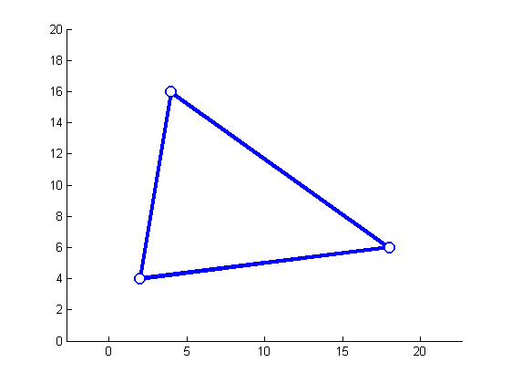
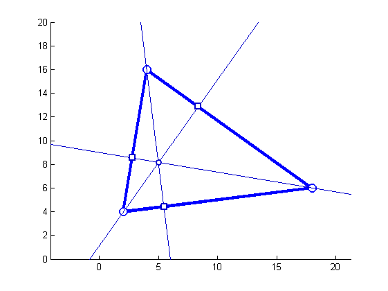
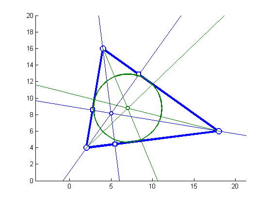
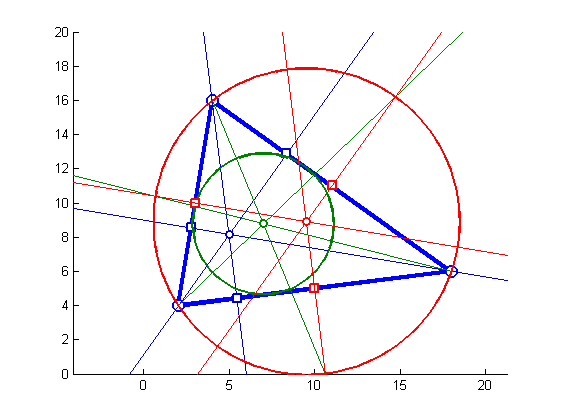

Contents
function triangleDemo(varargin)
Triangle
p1 = [2 4];
p2 = [18 6];
p3 = [4 16];
triangle = [p1; p2; p3];
figure(1); clf;
hold on;
axis([0 20 0 20]);
axis equal;
drawPolygon(triangle, 'linewidth', 3);
drawPoint(triangle, 'marker', 'o', 'markersize', 10, 'linewidth', 2, ...
'markerFaceColor', 'w');

altitudes
edge1 = createLine(p2, p3);
edge2 = createLine(p1, p3);
edge3 = createLine(p1, p2);
alt1 = orthogonalLine(edge1, p1);
alt2 = orthogonalLine(edge2, p2);
alt3 = orthogonalLine(edge3, p3);
foot1 = intersectLines(edge1, alt1);
foot2 = intersectLines(edge2, alt2);
foot3 = intersectLines(edge3, alt3);
drawLine(alt1, 'color', [0 0 .8]);
drawLine(alt2, 'color', [0 0 .8]);
drawLine(alt3, 'color', [0 0 .8]);
feet = [foot1; foot2 ;foot3];
drawPoint(feet, 'marker', 's', 'color', [0 0 .8], 'linewidth', 2, 'markerFaceColor', 'w');
orthoCenter = intersectLines(alt1, alt2);
drawPoint(orthoCenter, ...
'marker', 'o', 'color', [0 0 .8], 'linewidth', 2, 'markerfacecolor', 'w');

Median rays and inscribed circle
ray1 = bisector(p2, p1, p3);
ray2 = bisector(p3, p2, p1);
ray3 = bisector(p1, p3, p2);
drawRay([ray1 ; ray2 ; ray3], 'color', [0 .5 0]);
innerCircleCenter = intersectLines(ray1, ray2);
innerRadius = distancePointLine(innerCircleCenter, edge1);
innerCircle = [innerCircleCenter innerRadius];
drawCircle(innerCircle, 'color', [0 .5 0], 'linewidth', 2);
drawPoint(innerCircleCenter, ...
'color', [0 .5 0], 'markerFaceColor', 'w', 'linewidth', 2);

Circumscribed circle
mid12 = midPoint(p1, p2);
mid13 = midPoint(p1, p3);
mid23 = midPoint(p2, p3);
midPoints = [mid12 ; mid13; mid23];
drawPoint(midPoints, 'marker', 's', 'color', 'r', 'linewidth', 2, 'markerFaceColor', 'w');
perp1 = orthogonalLine(edge1, mid23);
perp2 = orthogonalLine(edge2, mid13);
perp3 = orthogonalLine(edge3, mid12);
drawLine([perp1 ; perp2 ; perp3], 'color', 'r');
orthoCenter = intersectLines(perp1, perp2);
orthoRadius = distancePoints(orthoCenter, p1);
drawCircle([orthoCenter orthoRadius], 'color', 'r', 'linewidth', 2);
drawPoint(orthoCenter, 'color', 'r', 'markerFaceColor', 'w', 'linewidth', 2);
